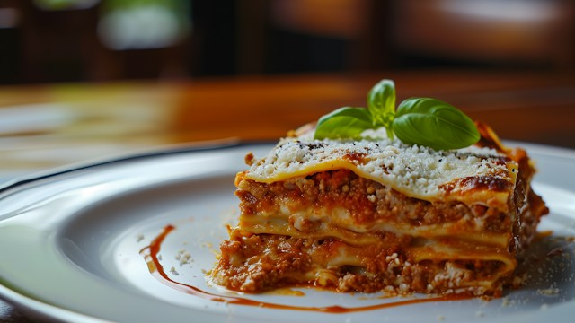

Lasanha de Carne Moída

Descrição
Lasanha é um prato da culinária italiana feito com camadas alternadas de massa em placas largas e
retangulares, molhos, recheios e queijos, geralmente levado ao forno para gratinar.
O termo também designa a própria massa usada no preparo
Ingredientes
-
2 colheres (sopa) de óleo
-
1 cebola média picada (150 g)
-
400 g de patinho bovino moído
-
2 tomates médios picados (300 g)
-
2 caixinhas de polpa de tomate (1040 g)
-
meia xícara (chá) de água (100 ml)
-
2 sachês de Tempero SAZÓN® Laranja
-
meia colher (chá) de sal
-
1 pacote de massa de lasanha seca direto ao forno (250 g)
-
200 g de presunto fatiado
-
300 g de muçarela fatiada
Modo de preparo
-
Em uma panela grande, coloque o óleo e leve ao fogo alto para aquecer. Junte a cebola e refogue por 2 minutos.
Acrescente a carne, aos poucos, e frite por 10 minutos, ou até o líquido secar. Adicione o tomate e
refogue por 3 minutos, ou até que comece a desmanchar.
-
Junte a polpa de tomate, a água, o Tempero SAZÓN® e o sal, e deixe cozinhar em fogo baixo, com a panela
semitampada, por 5 minutos, ou até encorpar levemente. Retire do fogo.
-
Em um refratário retangular grande (23 x 35 cm), faça camadas com o molho, a massa, o presunto e a
muçarela, intercalando e repetindo até finalizar com o molho e a muçarela.
-
Cubra com papel-alumínio e leve ao forno médio (180 graus), preaquecido, por 20 minutos, ou até que
a massa fique macia. Remova o papel-alumínio e volte ao forno por mais 5 minutos, ou até dourar
o queijo.
-
Retire do forno e sirva em seguida.
Back to Home